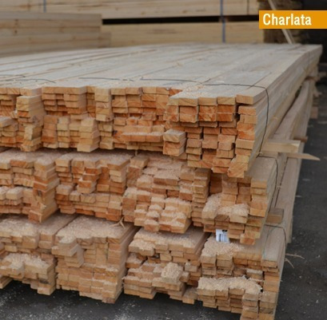

aserrado:
en Establecimiento norte maderero ofrecemos servicio de aserrado, y se realiza el tipo de corte que quiera el cliente, ya sea para bins, palets, tiranteria, y tablas. estos servicios se realizan en el aserradero


colocaccion de techos y decks:
ofrecemos servicio de colocaccion de decks con las siguientes maderas: lapacho (calidad alta), eucaliptus (calidad media), pino (calidad baja), las cuales por su calidad es equitativa a sus precios